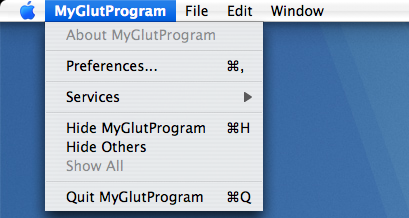
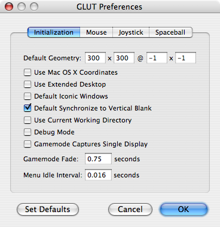

|
Q: How do I avoid tearing in OpenGL?A: Tearing is a visual artifact that occurs when the display begins reading from a buffer before your application's rendering to that buffer has completed. You can use the swap interval context parameter to avoid tearing. This parameter is zero by default. If you set it to a non-zero value, OpenGL will synchronize buffer swaps with a vertical retrace event. One potential reason to have a zero swap interval is to measure the maximum possible number of frames that can be rendered within a given time. This is because setting swap interval to a non-zero value caps the effective frame rate of your application to an integer divisor of the display's refresh rate. For instance, if your application can complete its rendering within one display refresh period, the frame rate will be capped at the refresh rate. If, however, your application takes longer than one refresh period, then the buffer swap will have to wait until the next refresh event. This effectively drops your frame rate to 1 / [time to render a frame rounded up to nearest vertical retrace period]. Note: Although LCD displays don't have a vertical blanking period as such; they have a fixed refresh frequency of around 60Hz. NSOpenGLContextsListing 1 shows how to enable and disable synchronization in an NSOpenGLContext. Listing 1: Synchronizing buffer swaps to VBL in an NSOpenGLView. long swapInterval = 1; // request synchronization //long swapInterval = 0; // disable synchronization [[self openGLContext] setValues:&swapInterval forParameter: NSOpenGLCPSwapInterval]; AGL ContextsListing 2 shows how to enable and disable synchronization using the AGL API. Listing 2: Synchronizing buffer swaps to VBL in the current AGL Context. long swapInterval = 1; // request synchronization //long swapInterval =0; // disable synchronization AGLContext ctx = aglGetCurrentContext(); if (NULL != ctx) aglSetInteger(ctx, AGL_SWAP_INTERVAL, &swapInterval); CGL ContextsListing 3 shows how to enable and disable synchronization using the CGL API. Listing 3: Synchronizing buffer swaps to VBL in the current CGL Context long swapInterval = 1; // request synchronization //long swapInterval = 0; // disable synchronization CGLContextObj ctx = CGLGetCurrentContext(); if (NULL != ctx) CGLSetParameter(ctx, kCGLCPSwapInterval, &swapInterval); Note: You can use CGLSetParameter to set the swap interval for AGLContext and NSOpenGLContext objects because each of these contexts are built on the CGLContextObj opaque type. GLUT DefaultsGLUT based programs have the additional convenience of a default setting. The default setting is only evaluated during application launch, so for the change to take effect the application must be restarted. GLUT defaults can be accessed on their application menus: Figure 1: Accessing the preferences of a GLUT application  To enable synchronization to VBL by default select "Default Synchronize to Vertical Blank" and restart the application. Figure 2: Selecting synchronization default.  ReferencesThe OpenGL Programming Guide for Mac OS X has a section about this topic under the best practices area of improving performance. Document Revision History
Posted: 2007-07-16 |
|